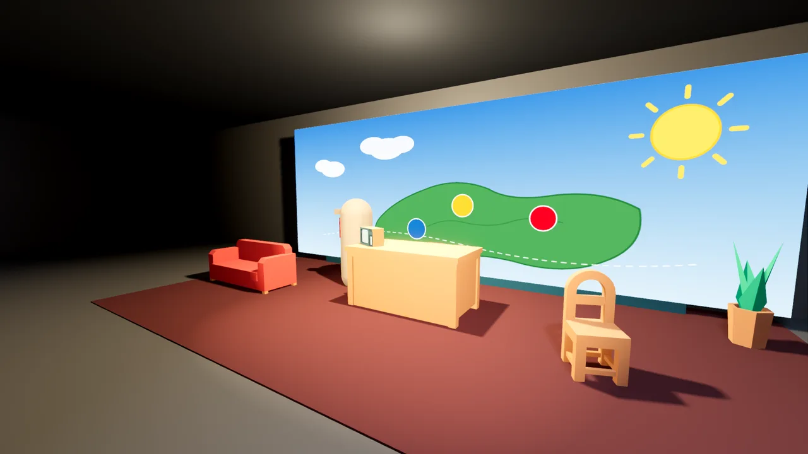
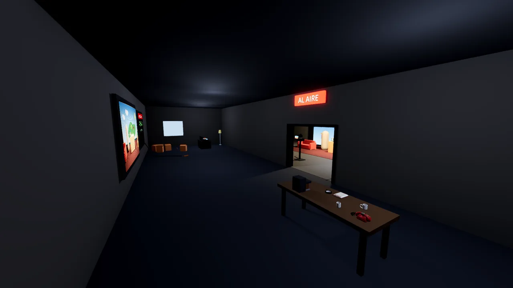

En Vivo
Un cooperativo en línea para 2 a 4 jugadores: son el equipo técnico de un canal de TV de mala muerte y el programa sale al aire pase lo que pase. Fue mi primer prototipo real en 3D. Lo dejé en pausa, pero de ahí salió casi todo lo que hoy sé de 3D y física en Godot. An online co-op game for 2 to 4 players: you're the crew of a low-budget TV channel, and the show goes on air no matter what. It was my first real 3D prototype. I put it on hold, but it's where I learned most of what I know about 3D and physics in Godot.
- RolRole
- Diseño y programación, en solitarioDesign and programming, solo
- EstadoStatus
- Prototipo en pausaPrototype on hold
- DesarrolloDevelopment
- Julio y agosto de 2026July and August 2026
- JugadoresPlayers
- 2 a 4, en línea2 to 4, online
- TecnologíaTech
- Godot 4.6, GDScript, multijugador por RPCGodot 4.6, GDScript, RPC multiplayer
- PruebasTests
- 16 automatizadas16 automated

La ideaThe idea
Un juego para jugar con amigos y reírse: un canal de los 90, cámaras, una mesa de sonido y un rating que sube y baja en vivo. Mientras el presentador habla, algo se incendia, suena un teléfono o se cae el decorado, y el equipo tiene que esconderlo antes de que lo vea la audiencia. Primera persona, con manos visibles, y todo físico: lo que agarras pesa y lo que tiras rueda.
A game to play with friends and laugh: a 90s channel, cameras, a sound desk and a ratings meter that rises and falls live. While the anchor talks, something catches fire, a phone rings or the set falls apart, and the crew has to hide it before the audience sees. First person, with visible hands, and everything is physical: what you pick up has weight, and what you throw rolls.
Lo que se alcanzó a construirWhat got built
- Multijugador en línea con servidor autoritativo: el anfitrión decide la física y los desastres, y el resto se sincroniza por RPC.
- El plano de verdad: el juego sabe si algo está en cámara mirando el encuadre y la línea de visión, así que agacharse detrás del escritorio sirve para esconderse.
- Rating en vivo que reacciona a lo que se ve y se oye, y explica por qué baja.
- Desastres y herramientas: fuego con extintor, un teléfono que suena, aplausos con reloj, y objetos para agarrar, cargar y lanzar.
- 16 pruebas automáticas que levantan el juego y revisan la física, el agarre, el fuego tras una pared y el teléfono.
- Online multiplayer with an authoritative server: the host runs the physics and disasters, and everyone else syncs over RPC.
- Real on-camera detection: the game checks the camera frustum and line of sight, so crouching behind the desk actually hides you.
- Live ratings that react to what's seen and heard, and explain why they drop.
- Disasters and tools: fire and an extinguisher, a ringing phone, timed applause, and objects to grab, carry and throw.
- 16 automated checks that boot the game and test physics, grabbing, fire behind a wall and the phone.

El teléfonoThe phone
Es la parte que más me gusta y la mejor lograda. En el diseño era un desastre más: suena en cualquier momento mientras el programa está al aire, y hay que contestarlo o taparlo con un efecto de la mesa de sonido. Si nadie atiende, el que llama se cansa, corta y el rating paga. Terminé puliéndolo a fondo porque sentí que podía ser una mecánica divertida por sí sola.
It's the part I like most and the best-crafted one. In the design it was just another disaster: it rings at any moment while the show is on air, and you either answer it or cover it with a sound effect from the desk. If nobody picks up, the caller gives up, hangs up and the ratings pay for it. I ended up polishing it in depth because I felt it could be a fun mechanic on its own.
- Un cordón que es una cuerda de verdad. Simulado con Verlet: cada punto recuerda dónde estaba y de ahí sale su inercia. Choca con el mundo físico, se apoya en la mesa, se engancha en los cantos y arrastra las tazas con una fuerza limitada, así que lo pesado se resiste solo.
- Avisa antes de cortarse. A los 2 metros el cordón se tensa, el auricular tiembla y la cámara se sacude. Si sigues caminando hasta 2,6 m, se corta: el auricular sale volando en arco, rebota y la base acusa el golpe. Ese medio metro de margen es el aviso.
- Nunca queda trabado. Al colgar, el cordón se acomoda solo. Si queda enganchado más de un segundo y medio, vuelve a su forma de reposo.
- Detalles que lo hacen leerse como un objeto real. El rulo del cordón tiene la proporción de uno real (se ve el agujero del medio), el auricular lleva cinta adhesiva medida contra la forma del modelo, el plástico tiene manchas y polvo de años de uso, y el sonido pasa por un filtro de auricular viejo.
- Se ubica sin mirarlo. Puede sonar fuera de plano, así que vibra con rayitas de cómic y un «¡RING!» que dicen dónde está de un vistazo.
- A cord that's a real rope. Simulated with Verlet integration: each point remembers where it was, and its inertia comes from that. It collides with the physics world, rests on the table, catches on edges and drags mugs with limited force, so heavy things resist on their own.
- It warns you before it snaps. At 2 meters the cord pulls tight, the handset shakes and the camera jolts. Keep walking to 2.6 m and it snaps: the handset flies back in an arc, bounces, and the base takes the hit. That half meter of slack is the warning.
- It never stays stuck. When you hang up, the cord settles on its own. If it's still snagged after a second and a half, it snaps back to its resting shape.
- Details that make it read as a real object. The coil has the proportions of a real one (you can see the hole in the middle), the handset has tape measured against the model's shape, the plastic shows smudges and dust from years of use, and the audio runs through an old-handset filter.
- You can find it without looking. It can ring off camera, so it shakes with comic-style lines and a "RING!" that show where it is at a glance.
Un fragmento del códigoA piece of the code
## Relaja las distancias entre vecinos: si dos puntos se alejaron más que un tramo, se acercan.
for it in veces:
_cable_coarse[0] = start # un extremo, en la base
_cable_coarse[ROPE_POINTS - 1] = target # el otro, en el auricular
for paso in 2: # ida y vuelta, para que no se cargue hacia un lado
for k in ROPE_POINTS - 1:
var i: int = k if paso == 0 else ROPE_POINTS - 2 - k
var a: Vector3 = _cable_coarse[i]
var b: Vector3 = _cable_coarse[i + 1]
var d := b - a
var dl := d.length()
if dl <= seg:
continue
var corr := d * ((dl - seg) / dl) * 0.5
_cable_coarse[i] = a + corr
_cable_coarse[i + 1] = b - corrQué aprendíWhat I learned
- Medir lo que se ve, no lo que es fácil de medir. Para saber si el cordón se veía tirante, el cociente entre su largo y la distancia no servía: la panza que se ve crece con la raíz del sobrante. Hubo que medir la flecha.
- Cambiar una sola variable y volver a mirar. Un «nudo» en el cordón resultó ser otro objeto de la mesa. Lo descubrí apagando el rulo y sacando la foto de nuevo, en vez de seguir razonando sobre la imagen.
- Probar el caso difícil de verdad. Una prueba del destrabe pasaba incluso con el destrabe apagado. Hubo que construir un muro en la prueba y dejar el cordón trabado de verdad para que sirviera.
- En 3D, casi todo bug visual es geométrico. Un cable que se veía «partido» no era la física sino cómo se armaban los anillos del tubo alrededor de la curva.
- Measure what you see, not what's easy to measure. To know whether the cord looked taut, the ratio of its length to the distance was useless: the visible sag grows with the square root of the slack. I had to measure the sag itself.
- Change one variable and look again. A "knot" in the cord turned out to be a different object on the table. I found it by switching off the coil and taking the picture again, instead of reasoning about the image.
- Test the hard case for real. One test for the unsnagging still passed with the feature turned off. I had to build a wall inside the test and genuinely snag the cord for it to mean anything.
- In 3D, most visual bugs are geometry. A cable that looked "broken" wasn't the physics but how the tube's rings were oriented around the curve.
Por qué está en pausaWhy it's on hold
Hasta ahora solo lo mostré jugándolo yo y transmitiendo por Discord. Un juego en línea hay que probarlo con gente conectada desde sus casas, y eso tiene un costo que hoy no puedo cubrir. Sin una plataforma como Steam, que resuelve las conexiones y los servidores, cada prueba significa que alguien abre puertos en su router y expone su IP. Preferí no arriesgar eso y poner el foco en juegos para un jugador que puedo terminar y publicar. El código y lo aprendido siguen ahí: Floor, Sir? partió con todo lo que me enseñó este prototipo sobre 3D.
So far I have only shown it by playing it myself and streaming on Discord. An online game has to be tested with people connecting from their own homes, and that has a cost I can't cover right now. Without a platform like Steam handling connections and servers, every test means someone opens ports on their router and exposes their IP. I chose not to risk that and to focus on single-player games I can finish and ship. The code and the lessons are still there: Floor, Sir? started with everything this prototype taught me about 3D.
Modelo base del teléfono: Poly by Google (CC-BY), recoloreado y separado en cuerpo y auricular por código. Sonidos libres de Freesound y Mixkit.
Base phone model: Poly by Google (CC-BY), recolored and split into body and handset by code. Free sounds from Freesound and Mixkit.